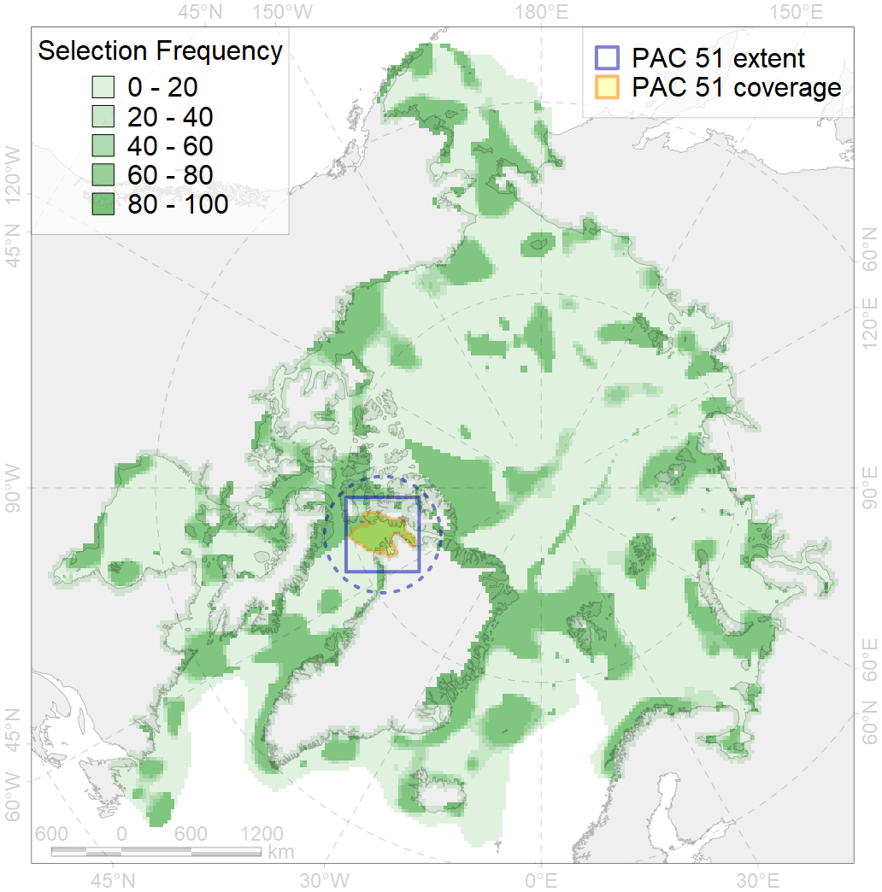
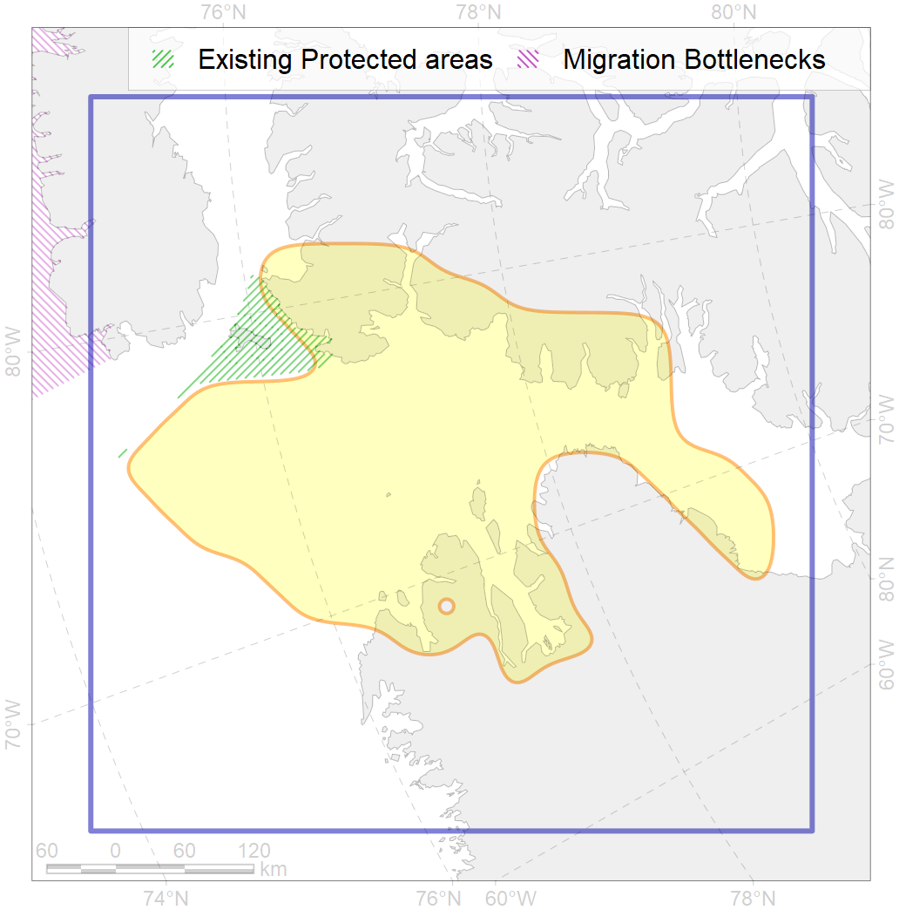

51
For more information regarding this PAC and to conduct custom spatial analysis using the PAC data or any spatial query, please consult Accenter.

1
CFs entirely within the PAC area
19
CFs at least 25% within the PAC area
15
CFs with at least 50% of their target achieved in the PAC
28
CFs with at least half of their target achieved in the PAC
| CF ID | CF Name | Proportion in the PAC | Conservation Target | Contribution to ArcNet Target Achievement | PAC’s Contribution to the Achieved Target |
|---|---|---|---|---|---|
| 5092 | Narwhal Smith Sound stock summer core distribution | 100.0% | 72.0% | 128.9% | 100.0% |
| 5081 | Narwhal Inglefield Bredning stock summer distribution | 99.9% | 48.0% | 113.3% | 100.0% |
| 5096 | Beluga and Narwhal wintering area in the North Water polynya | 96.9% | 96.0% | 100.6% | 98.4% |
| 7235 | Kelp forests of NW Greenland | 94.4% | 30.0% | 111.9% | 98.8% |
| 7257 | Baffin Bay Bank | 84.5% | 70.0% | 120.7% | 84.5% |
| 3020 | Marginal Ice Zone distribution in April in the Northern Canadian Archipelago LME | 83.8% | 12.0% | 697.9% | 97.7% |
| 9009 | polar bear of the KB (Kane Basin) subpopulation distribution | 76.8% | 32.4% | 229.1% | 96.3% |
| 9027 | polar bear denning areas of KB (Kane Basin) subpopulation | 67.7% | 64.8% | 95.5% | 94.9% |
| 3126 | Polynyas distribution in the Baffin Bay region | 66.4% | 20.0% | 328.1% | 69.2% |
| 2064 | Bearded seal concentration areas in Greenland | 61.6% | 24.0% | 245.2% | 68.6% |
| 2037 | Ringed seal foraging areas in the Baffin Bay region | 60.9% | 24.0% | 238.8% | 85.6% |
| 8042 | Queen Elizabeth Island glacial termini | 59.0% | 30.0% | 191.5% | 73.0% |
| 6035 | Ivory gull (Pagophila eburnea) Canadian breeding colonies | 51.4% | 64.8% | 69.3% | 54.8% |
| 5114 | Narwhal summer feeding area in Kane Basin | 49.0% | 48.0% | 95.2% | 93.1% |
| 5091 | Narwhal Smith Sound stock summer distribution | 49.0% | 48.0% | 100.8% | 96.0% |
| 5006 | Beluga of the Baffin Bay winter distribution | 37.6% | 48.0% | 78.2% | 40.0% |
| 7148 | III.3. 1. Northwest Greenland shelf | 31.7% | 11.5% | 263.1% | 64.7% |
| 7150 | III.3.1.2. NW Greenland glacial troughs | 30.0% | 8.8% | 331.3% | 54.7% |
| 7149 | III.3.1.1. NW Greenland medium and low profile shelf | 27.8% | 11.1% | 238.6% | 59.5% |
| 3033 | Marginal Ice Zone distribution in July in the Northern Canadian Archipelago LME | 24.3% | 24.0% | 99.0% | 61.7% |
| 5042 | Bowhead whale winter concentrations in the Baffin Bay | 19.6% | 48.0% | 40.7% | 27.7% |
| 7034 | North-western Greenland region | 15.3% | 20.6% | 66.5% | 40.6% |
| 6094 | Ivory gull (Pagophila eburnea) Canadian breeding colonies | 15.0% | 43.2% | 33.6% | 19.3% |
| 6091 | Little auk (Alle alle alle) breeding colonies in Greenland and Canada buffer feeding area | 14.2% | 48.0% | 28.3% | 20.2% |
| 6058 | Common eider (Somateria mollissima borealis) West Greenland breeding&moulting grounds | 11.7% | 67.2% | 16.8% | 16.7% |
| 3052 | Multiyear Ice distribution in September in the Baffin Bay LME | 10.4% | 18.0% | 51.5% | 12.3% |
| 3021 | Marginal Ice Zone distribution in April in the Baffin Bay LME | 9.5% | 12.0% | 78.1% | 12.0% |
| 7021 | Eastern Canadian Archipelago region | 7.6% | 9.7% | 76.3% | 12.7% |
| 7014 | Core of Canadian - Greenland Province of Arcto-Atlantic zoogeographical region | 7.4% | 7.4% | 95.1% | 13.2% |
| 6041 | Ivory gull (Pagophila eburnea) postbreeding grounds in the Canadian Arctic | 6.9% | 21.6% | 31.2% | 12.1% |
| 1003 | Atlantic Walrus Wintering Areas in Canada | 6.6% | 67.2% | 9.4% | 8.2% |
| 6031 | Little auk (Alle alle alle) breeding colonies in Greenland and Canada | 6.2% | 72.0% | 8.7% | 8.4% |
| 2014 | Bearded seal whelping areas in the north of the Canadian Archipelago | 5.9% | 24.0% | 23.1% | 14.8% |
| 6008 | Brent goose (Branta bernicla hrota) Canadian High Arctic breeding&moulting grounds | 5.9% | 24.0% | 22.6% | 11.2% |
| 3034 | Marginal Ice Zone distribution in July in the Baffin Bay LME | 5.2% | 24.0% | 20.6% | 8.5% |
| 2007 | Bearded seal whelping areas in the Baffin Bay | 5.1% | 24.0% | 18.6% | 6.5% |
| 5103 | Bowhead whale Baffin population spring-autumn distribution | 4.6% | 24.0% | 19.2% | 10.5% |
| 4074 | Fish zoogeography, Arctic Region, High-Arctic Shelf Province, Canadian-Greenland District | 4.6% | 7.4% | 59.1% | 8.7% |
| 6106 | Thick-billed murre (Uria lomvia lomvia) breeding colonies buffer feeding area | 4.2% | 48.0% | 8.6% | 6.3% |
| 1002 | Atlantic Walrus Summer Distribution in Canada | 4.1% | 33.6% | 11.7% | 8.0% |
| 2027 | Hooded seal foraging areas | 3.1% | 38.4% | 8.1% | 7.0% |
| 9002 | polar bear of the BB (Baffin Bay) subpopulation distribution | 3.0% | 32.4% | 9.2% | 7.6% |
| 4029 | Feeding area of the Arctic charr (Salvelinus alpinus), anadromous populations | 2.3% | 38.4% | 5.9% | 5.1% |
| 3051 | Multiyear Ice distribution in September in the Northern Canadian Archipelago LME | 2.3% | 18.0% | 12.1% | 5.8% |